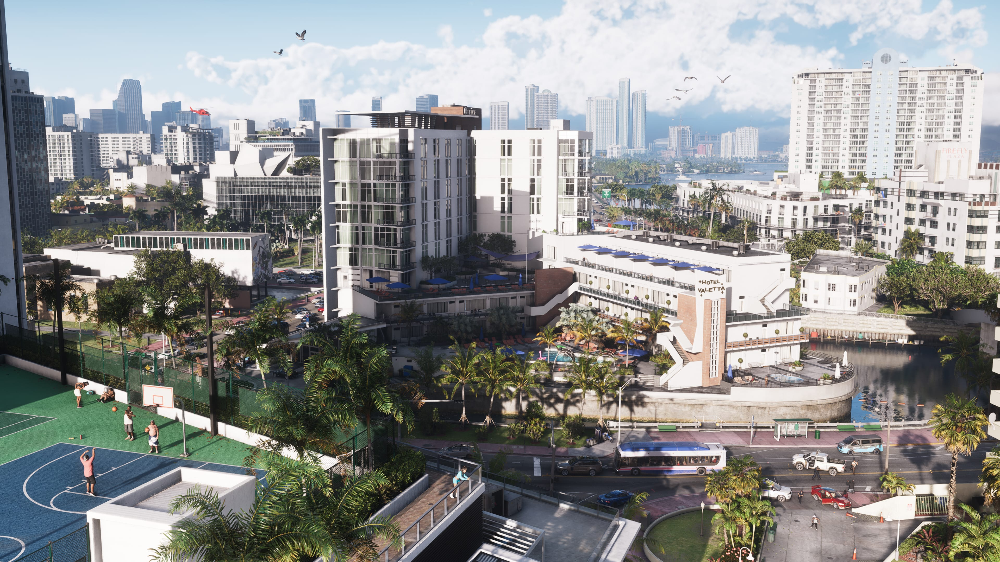
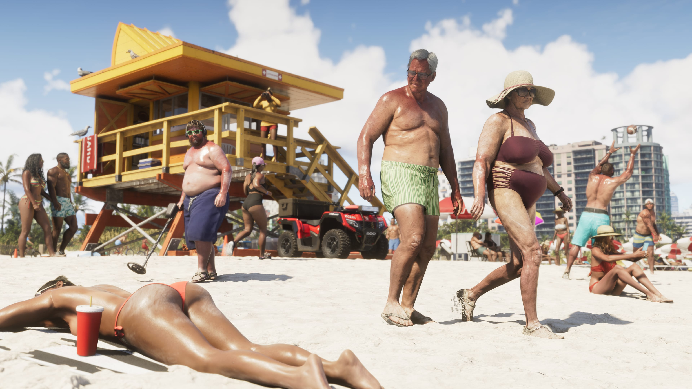
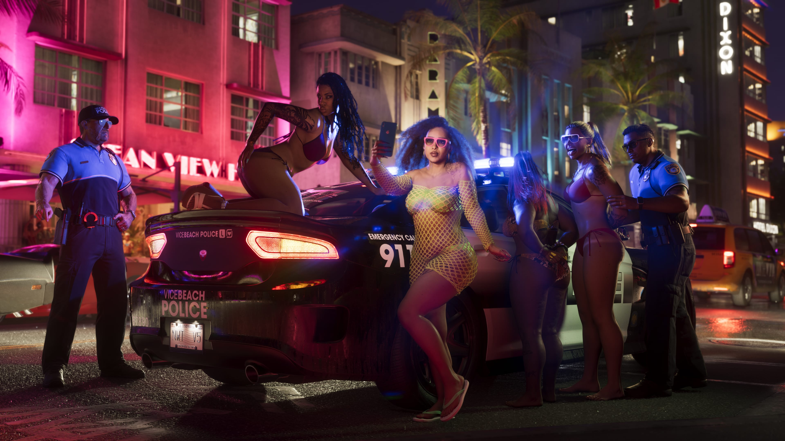
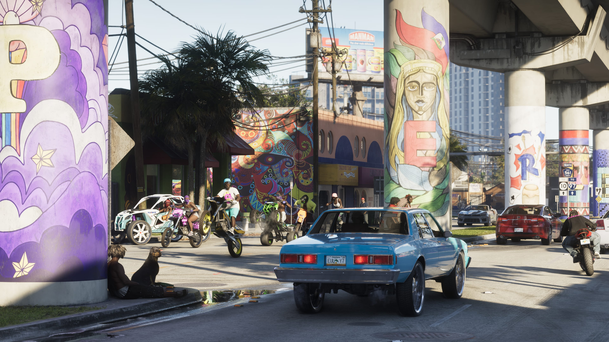
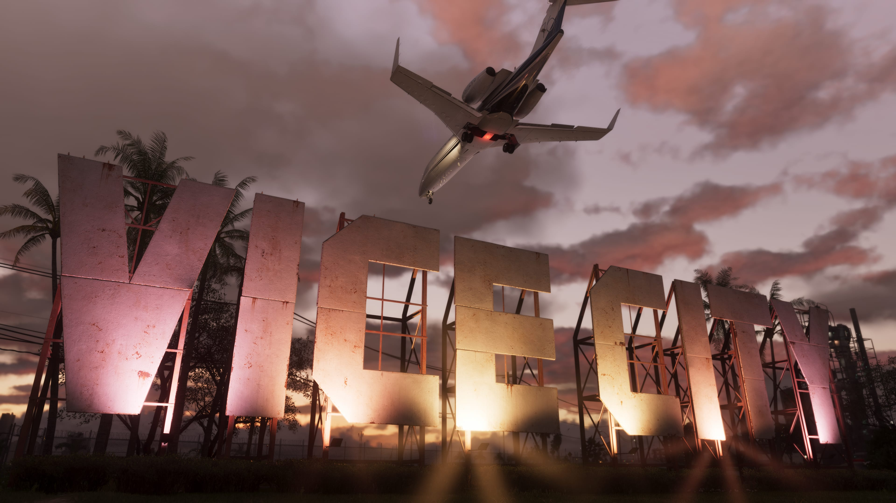

Vice City
Vice City retorna em Grand Theft Auto VI como uma das regiões mais importantes do estado de Leonida. Nesta página, o GTA6Zoone reúne tudo o que já foi oficialmente apresentado sobre a cidade e, futuramente, concentrará também missões, locais, atividades, veículos, propriedades, colecionáveis, segredos e muito mais.

O coração urbano de Leonida
Vice City é uma das principais localidades apresentadas pela Rockstar Games para GTA VI. Os materiais oficiais mostram uma grande cidade costeira marcada por prédios, avenidas movimentadas, praias, marinas, vida noturna e ruas iluminadas por neon.
A cidade faz parte de um mundo muito maior. GTA VI não se limita a Vice City: o estado de Leonida inclui diferentes ambientes urbanos, costeiros, industriais e naturais.

CONFIRMADO: Vice City integra o estado de Leonida e é uma das regiões oficialmente apresentadas pela Rockstar Games para Grand Theft Auto VI.

Vice City dentro da história
A Rockstar apresenta GTA VI como uma história que acompanha Jason Duval e Lucia Caminos depois que um golpe aparentemente simples dá errado.
A dupla acaba envolvida em uma conspiração criminosa que se espalha pelo estado de Leonida. Vice City ocupa uma posição importante dentro desse cenário e aparece constantemente nos materiais promocionais do jogo.
Ainda não conhecemos todos os acontecimentos, missões ou locais que farão parte da cidade. Essas informações serão adicionadas à Wiki somente quando houver confirmação confiável.
Pessoas ligadas a Vice City
Algumas conexões com a cidade já foram estabelecidas oficialmente pela Rockstar Games.
Boobie Ike
A Rockstar descreve Boobie como uma lenda local de Vice City. Seu império envolve negócios imobiliários, um clube e um estúdio de gravação.
Conhecer Boobie Ike → CONFIRMADODre'Quan Priest
Dre'Quan está ligado à Only Raw Records e busca conquistar espaço na cena musical de Vice City.
Conhecer Dre'Quan Priest →Tudo sobre a região
Esta página foi preparada para crescer junto com GTA VI. Conforme novas informações oficiais forem divulgadas e, principalmente, depois do lançamento, cada área abaixo poderá receber guias e páginas específicas de Vice City.
Bairros e locais
Ruas, bairros, lojas e pontos de interesse.
Missões
Missões e acontecimentos ligados à cidade.
Atividades
Atividades e experiências disponíveis na região.
Veículos
Veículos e pontos relevantes relacionados à cidade.
Propriedades
Casas, negócios e outras propriedades identificadas.
Colecionáveis
Itens colecionáveis encontrados em Vice City.
Segredos
Descobertas e locais escondidos da região.
Easter Eggs
Referências, curiosidades e easter eggs verificados.
Imagens de Vice City
Imagens oficiais utilizadas para acompanhar visualmente a evolução e os ambientes apresentados de Vice City.






Vice City no mapa de GTA VI
A página do mapa do GTA6Zoone reunirá as regiões conhecidas de Leonida e, futuramente, poderá conectar pontos de interesse diretamente aos guias de cada local.
Conforme tivermos informações confiáveis sobre ruas, bairros, missões, lojas, atividades e colecionáveis, Vice City poderá ganhar seus próprios pontos interativos.
Explorar o mapa →O que está confirmado
A cidade é uma das principais regiões oficialmente apresentadas pela Rockstar Games.
A cidade faz parte do estado de Leonida, cenário principal apresentado para GTA VI.
Boobie é oficialmente descrito como uma figura conhecida de Vice City.
Dre'Quan Priest e a Only Raw Records possuem ligação oficial com a cena musical de Vice City.
Rockstar Games
As informações atuais desta página utilizam materiais oficiais publicados pela Rockstar Games.
Site oficial de Grand Theft Auto VI


TRANSPARÊNCIA EDITORIAL: esta página será atualizada conforme novas informações oficiais e, futuramente, informações verificadas diretamente no jogo estejam disponíveis. Rumores ou teorias não serão apresentados como fatos.